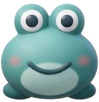

Voice generatorCreates an AI voice file for every phonogram sound, then packs them into a zip for the audio folder of your GitHub repository. Your API key stays in this browser. Finished files are kept in this browser too, so you can close the tab and continue later.
This page could not find data.js, so it is using its built-in phonogram list. That works fine, but edits you make to data.js will not show here. To use your own list, open this page from the tools folder of your site.
Press Find models once after pasting your key to load the TTS models your key can use.
Download for GitHub puts every sound into one small file named pack.json. Upload just that one file into the audio folder of your repository.
Free keys have per-minute limits. When a limit is reached the generator waits and tries again by itself.
Play each sound. If one sounds off, edit its IPA and press Redo. Stop consonants such as b, t, and k can come out faint when isolated; try adding a short vowel, for example "bə".
| Tile | Sound | Keyword | IPA | Sound file | Word file |
|---|